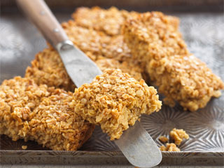

Desserts
Simple Vanilla Cake
Serves : 6
Preperation : 10 mins
Cooking : 50 mins
A quick and easy cake that doesn't have too many calories.
-
Ingredients
- 175g (6oz) margarine or softened butter
- 175g (6oz) caster sugar
- 3 large eggs
- 175g (6oz) self-raising flour, sifted
- 1 tsp baking powder
- 1 tsp vanilla extract
- Pinch of salt
-
Equipment
- 18cm (7in) Round cake tin
- Large mixing bowl
- Skewer
- Wire cooling rack
- Wooden spoon/ hand-held mixer
-
Method
- Heat the oven to 180°C (gas mark 4). Lightly grease an 18cm (7in) round cake tin with a little extra butter or margarine and cut a piece of greaseproof paper or non-stick baking parchment to fit the base of the tin.
- Put all the ingredients in a large mixing bowl and beat with a wooden spoon or a hand-held mixer for 1 minute, or until just combined. It's important not to beat the batter too much - just long enough to make it smooth.
- Pour or spoon the mixture into the tin, smooth the top and bake on the middle shelf of the oven for about 45-50 minutes. The cake is cooked when it looks well risen and golden; the top should spring back when lightly touched with a fingertip. Another test is to insert a skewer into the centre of the cake - it should come out clean.
- Let the cake sit in the tin for 5 minutes, then gently run a knife around the edge and turn the cake out onto a wire rack to cool. Serve dusted with icing sugar.
Golden Syrup Flapjacks
Serves : 12 - 16
Preparation time : 10 mins
Cooking time : 25 mins
Quick, easy and cheap puddings that can last for days.

-
Ingredients
- 150g butter
- 75g Light Brown soft sugar
- 3 rounded tbsp Golden Syrup
- 250g rolled oats (porridge oats)
-
Equipment
- Shallow 20cm square tin
- Medium pan
- A spoon
-
Method
- Preheat the oven to 180C (160C fan) gas 4.
- Grease and line a shallow 20cm square tin with parchment or greaseproof paper.
- Put the butter, sugar and Golden Syrup into a medium pan and gently heat until melted. Stir in the oats. Turn into the tin, level and press the mixture evenly and firmly with the back of a spoon.
- Bake for 25 minutes, or until golden around the edges.
- Remove from the oven and cool for 10 minutes then mark into 12 or 16 pieces whilst still warm. Cool completely before turning out onto a board and cutting again with a sharp knife.
Cookies
Makes : 1 - 12
Preparation time : 15 mins
Cooking time : 10 mins
A very popular dessert nowadays that is incredible simply to make and very tasty.
-
Ingredients
- 125g butter, softened
- 100g light brown soft sugar
- 125g caster sugar
- 1 egg, lightly beaten
- 1 tsp vanilla extract
- 225g self-raising flour
- 1/2 tsp salt
- 200g chocolate chips
-
Equipment
- Large Mixing Bowl
- Baking Tray
- Wooden spoon/ hand-held mixer
-
Method
- Preheat the oven to 180C (160C fan) gas 4.
- Cream butter and sugars, once creamed, combine in the egg and vanilla.
- Sift in the flour and salt, then the chocolate chips.
- Roll into walnut size balls, for a more homemade look, or roll into a long, thick sausage shape and slice to make neater looking cookies.
- Place on ungreased baking paper. Cook for 10 minutes until just golden round the edges.
- Take out of the oven and leave to harden for a minute before transferring to a wire cooling rack.